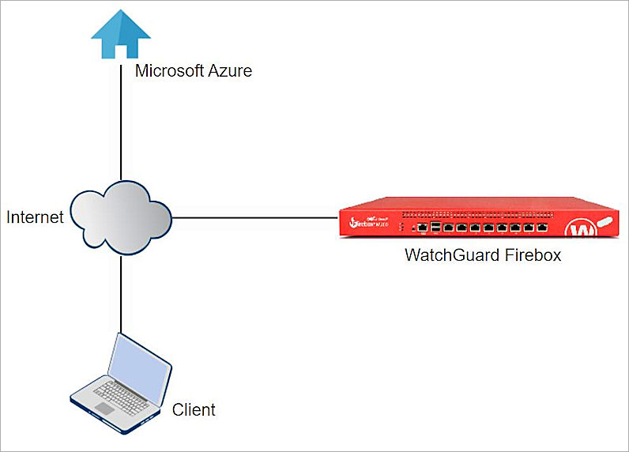
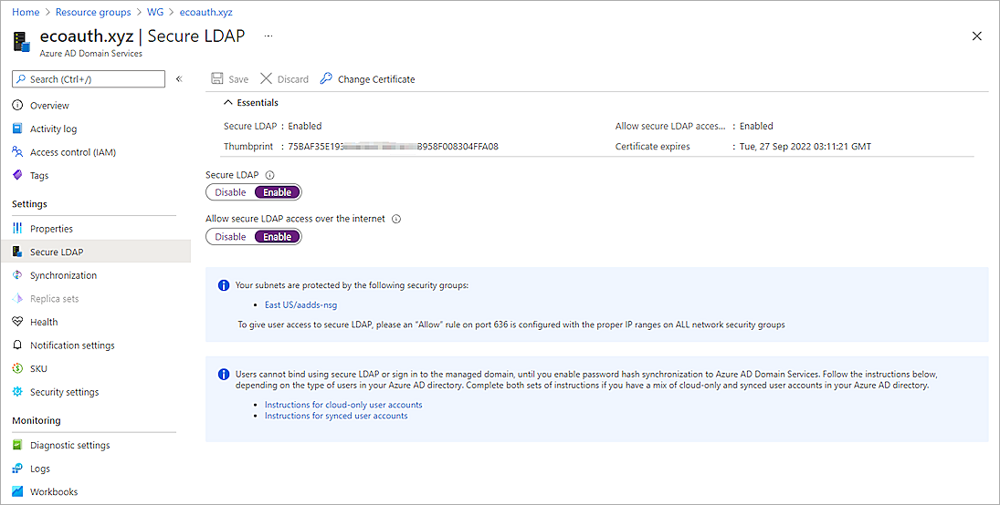
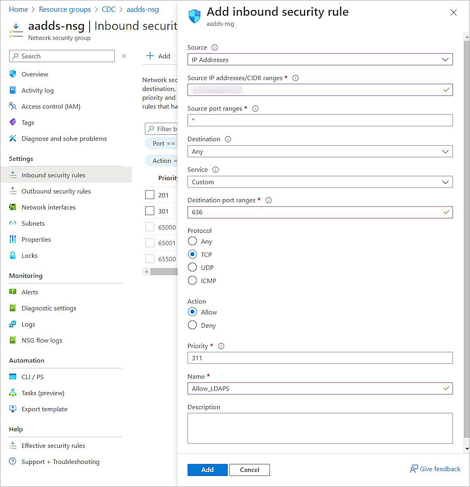
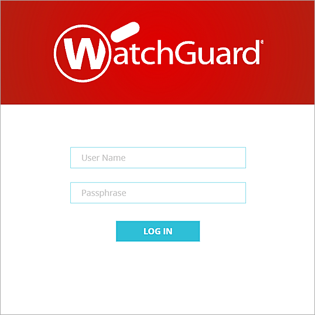
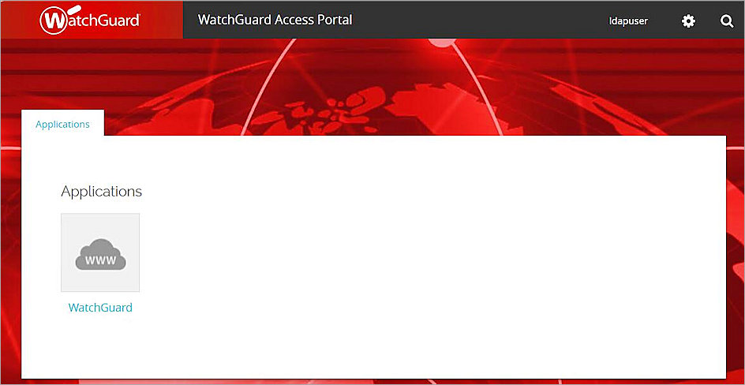

Deployment Overview
WatchGuard provides integration instructions to help our customers configure WatchGuard products to work with products created by other organizations. If you need more information or technical support about how to configure a third-party product, go to the documentation and support resources for that product.
This document describes how to configure the WatchGuard Access Portal to integrate with Microsoft Entra ID users.
Contents
Integration Summary
The hardware and software used in this guide include:
- Firebox with Fireware v12.10
- Microsoft Azure
Topology
This topology diagram shows the data flow for Microsoft Entra ID authentication with a WatchGuard Firebox and Microsoft Entra Domain Services.

Before You Begin
Before you begin these procedures, make sure that:
- You have an Microsoft Azure global administrator account within the Microsoft Entra ID tenant.
- You have an active Microsoft Azure subscription.
- You have created and configured Microsoft Entra Domain Services.
- You have a Firebox feature key with an Access Portal license.
Additional charges might apply for the use of Microsoft Azure. To learn more about Microsoft Azure, go to What is Microsoft Entra Domain Services.
Configure Microsoft Entra Domain Services
The steps in this section describe how to configure Microsoft Entra Domain Services.
Configure Secure LDAP
To configure Secure LDAP:
- Log in to the Azure portal with your Microsoft Azure account credentials.
- From Search, type Microsoft Entra Domain Services.
- Enter the created Managed Domain.

- Select Settings > Secure LDAP.
- Enable the Secure LDAP toggle.
- Enable the Allow secure LDAP access over the internet toggle.
- Next to the .PFX file with secure LDAP certificate text box, click the folder icon and upload your certificate. For information about how to create and export the certificate, go to Configure Secure LDAP in the Microsoft documentation.
- In the Password to decrypt .PFX file text box, type the password.

- Click Save.

- Click Properties.
- Copy the Secure LDAP external IP addresses value. You need this information when you configure the Firebox.

Configure a Security Rule in Microsoft Azure
To configure a security rule in Microsoft Azure:
- On the Microsoft Azure home page, from Search, type Resource groups.
- Select your Microsoft Entra Domain Services resource group.
- Select the Network security group.

- Select Settings > Inbound security rules > Add.
- From the Source drop-down list, select IP Addresses.
- In the Source IP addresses/CIDR ranges text box, type the public IP address or range for your environment.
- In the Source port ranges text box, type *.
- From the Destination drop-down list, select Any.
- From the Service drop-down list, select Custom.
- In the Destination port ranges text box, type 636.
- For Protocol, select TCP.
- For Action, select Allow.
- In the Priority text box, type a number between 100 and 4096. In our example, we type 311.
- In the Name text box, type a name.
- Click Add.

Add Microsoft Entra ID Group and User
To add an Microsoft Entra ID group and user:
- On the Microsoft Azure home page, from Search, type Microsoft Entra ID.
- Select Manage > Groups.
- Click New group.
- From the Group type drop-down list, select Security.
- In the Group name text box, type a group name.
- From the Membership type drop-down list, select Assigned.

- Click Create.
- To add a user, select Manage > Users.
- Click + New user > Create new user and enter your user information.

- Assign the user to the group created previously.
One or more roles can be assigned to this user. In this example, we select user administrator.

- Click Review + create.
- Click Create.
For cloud-only user accounts, users must change their passwords before they can use Microsoft Entra Domain Services. The password change process causes the password hashes for Kerberos and NTLM authentication to be generated and stored in Microsoft Entra ID. The account is not synced from Microsoft Entra ID to Microsoft Entra Domain Services until the password is changed. It might take a few minutes after the password change before the new password can be used in Microsoft Entra Domain Services.
Configure the Firebox
The WatchGuard Access Portal is a subscription service and needs an active license applied in your Firebox feature key before you can configure it on your Firebox.
You must configure the Active Directory authentication settings and enable Access Portal.
Configure Active Directory Authentication
To configure Active Directory authentication:
- Log in to Fireware Web UI (https://<your Firebox IP address>:8080).
- Select Authentication > Servers.
The Authentication Servers page opens.

- From the Authentication Servers list, click Active Directory.
The Active Directory page opens. - Click Add.
- Click Next.
- In the Domain Name text box, type the domain name. You cannot change the domain name after you save the settings.

- Click Next.
- In the Server Address text box, type or paste the secure LDAP external IP address you copied in the previous section.
- Select the Enable secure SSL connections to your Active Directory server (LDAPS) check box.

- Click Next.
- Click Finish.
Configure the Access Portal
To configure users and groups:
- Select Authentication > Users and Groups.
- Click Add. You can add a user or a group. This example adds a group.
The Add User or Group window opens. - For Type, select Group.
- In the Name text box, type a name for the group. The name of this group must match the name of the Microsoft Entra ID group your users belong to.
If you add a user, the name of the user must be the same as the name of the Microsoft Entra ID user.
- From the Authentication Server drop-down list, select the authentication server you configured.
- Click OK.

- Click OK.
- Click Save.
To configure the Access Portal:
- Select Subscription Services > Access Portal.
- Select the Enable Access Portal check box.
- To add an application, in the Applications section, click Add. In our example, add a Web Application.

- In the Name text box, type a description name.
- In the URL text box, type the URL address.
- Click OK.

- Select the User Connection Settings tab.
- In the Authentication Servers section, from the Authentication Server drop-down list, select the authentication server you created.
- Click Add.
- In the Authentication Server list, select your authentication server.
- To make this authentication server the default server, click Move Up until the server appears at the top of the list.

- (Optional) To give all users and groups permission to connect to all applications, in the User Access section, select All applications are available to all users and groups authenticated with the Access Portal. To specify which users and groups can access which applications, select Specify the applications available to each user and group.
- Click Add.
- From the Authentication Server drop-down list, select the authentication server you created.
- From the Type drop-down list, select Group.
- In the Name text box, type the group name. The name of this group must be the same as the name of the Microsoft Entra ID group your users belong to.
- Select the applications that are available to this group.

- Click OK.

- Click Save.
Test the Integration
To test the integration of Microsoft Entra ID users and the WatchGuard Access Portal:
- In a browser, go to https://<Firebox external IP address or FQDN>.

- Type your Microsoft Entra ID user name and password.
- Click Log In.
You are logged in successfully, the user can get access to the resource.
